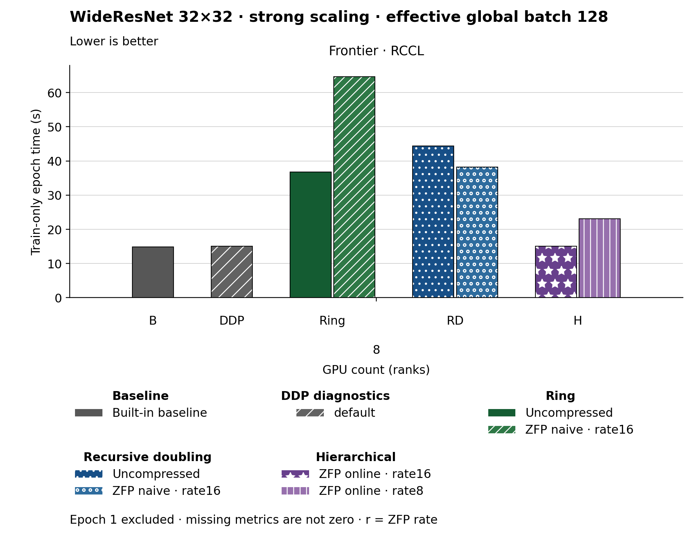

The figure uses bars. Families and methods are identified by text and patterns in addition to color. The metric is Train-only epoch time (s). Frontier · RCCL, GPU count (ranks) 8: Built-in baseline has the lowest plotted value, 14.830. Epoch 1 is excluded. Values are medians; when repeated runs are available the selected repeat policy is median. These are not confidence intervals across repeated jobs. Missing or unrecorded metrics are omitted, not set to zero.
| Panel | GPU count (ranks) | Method | Value | Runs |
|---|---|---|---|---|
| Frontier · RCCL | 8 | none | 14.83 | 1 |
| Frontier · RCCL | 8 | ring | 36.75 | 1 |
| Frontier · RCCL | 8 | ring_zfp_naive:16 | 64.67 | 1 |
| Frontier · RCCL | 8 | hierarchical_zfp_online_coll:8 | 23.08 | 2 |
| Frontier · RCCL | 8 | recursive_doubling | 44.43 | 1 |
| Frontier · RCCL | 8 | recursive_doubling_zfp_naive:16 | 38.21 | 1 |
| Frontier · RCCL | 8 | default | 15.09 | 1 |
| Frontier · RCCL | 8 | hierarchical_zfp_online_coll:16 | 15.03 | 2 |